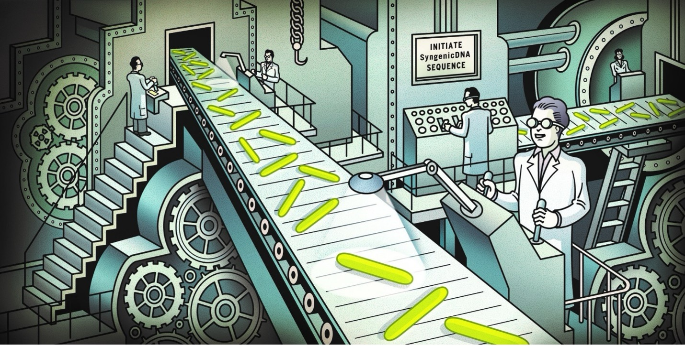

SyToGen performs syngenic DNA-based RM-silencing of genetic tool sequences.
Using the motif map from MotifFinder and the strain-specific codon-usage information from CodonBias, it determines which synonymous edits remove the defined RM motifs and returns an RM-silent version of the sequence that preserves the construct's intended biological function and can be transformed more efficiently into the target strain.

SyToGen Input:
- Motif-mapped sequences from MotifFinder (in .gbk Genbank format)
- Codon-usage table from CodonBias (in .csv format)
- RM motif table from MyMotif containing the complete set of motifs requiring removal or alternative handling (in .csv format).
- Editing parameters (e.g., user-defined settings specifying how to handle regions to avoid editing, regions permitted for larger modifications, forced edits, excluded edits).
SyToGen Output:
- RM-silent (SyngenicDNA) version of the genetic construct which will be exported as both annotated GenBank and FASTA files.
- Detailed edit report detailing motif removal statistics, codon-concordant substitutions, and regions requiring special handling.
- Alternative redesign solutions (“candidate sequences”) that show different permissible sets of synonymous edits ranked by motif removal and codon concordance.
- Graphical summaries and logs with the distribution of motifs before/after editing, positions of applied edits, warnings, and notes.
Submit Your Construct for RM-Silencing
About SyToGen
SyToGen was developed to enable any bacteriologist to systematically overcome the RM barrier in their bacteria of interest; by facilitating the rapid and reproducible redesign of genetic constructs so they are no longer recognized by RM systems upon transformation. The platform is built on the syngenic DNA RM-silencing strategy published by our group in 2019, which showed that precise, codon-aware elimination of RM motifs from the DNA sequences of genetic tools can enable robust and reliable transformation of previously genetically intractable bacteria.
Although the strategy is highly effective, manually introducing RM-silencing edits often required specialized knowledge of bacterial epigenetics, motif structure, sequence engineering, and codon constraints, and demanded careful tracking of multiple edits to avoid reintroducing RM motifs with each alteration. These requirements made it challenging for many researchers to apply SyngenicDNA, limiting its adoption as a routine approach for overcoming genetic intractability across diverse bacterial taxa.
Manual RM-silencing also does not scale. It is feasible only for a small number of strains (typically those with a limited set of RM motifs) but becomes impractical when working with large strain collections or with species that carry many independent RM systems. One of the motivations for developing SyToGen was to allow researchers to combine motif sets from collections of many strains and generate RM-silent versions of plasmids or other tools that can function broadly across a collection (for example in pScout approaches), rather than tailoring a separate construct for each individual strain.
SyToGenwas therefore developed to remove these practical and conceptual barriers. It automates motif screening, codon-bias–aware sequence redesign, and reconstruction of the edited construct enabling RM-silencing to be applied reliably at both small and large scale. Its purpose is to ensure that researchers can overcome the RM barrier in any strain, or strain collection, without requiring specialized expertise in RM biology or sequence engineering.
Ultimately, our goal is to reduce the barrier of genetic intractability and make it possible for researchers to study and engineer a much wider range of bacteria than is currently feasible.
What does SyToGen do?
SyToGen processes the motif-mapped genetic construct and applies a series of steps to achieve RM-silencing.
SyToGen integrates the outputs of MyMotif, MotifFinder, and CodonBian to generate an RM-silent construct. It systematically evaluates each motif instance and determines where synonymous edits can be introduced without altering the encoded proteins, regulatory elements, or other functional regions.
Specifically the module:
- Analyzes all motif occurrences and their sequence contexts
- Evaluates permissible synonymous substitutions within each motif
- Ensures edits match the strains' codon-usage preferences
- Checks for newly introduced motifs after each proposed edit
- Proposes multiple valid redesign paths (“candidate sequences”)
- Ranks redesign options by motif removal, codon concordance, and sequence integrity
- Reconstructs a complete RM-silent version of the construct
SyToGen also highlights regions where RM-silencing is challenging, such as sequences without synonymous editing options or motifs within essential regulatory elements. These are flagged so users can decide whether to redesign those regions or apply alternative approaches (e.g., in vitro methylation, vector redesign with alternative functional parts). By automating the most technically demanding parts of the syngenic DNA strategy, the SyToGen module provides a reproducible path to overcoming the RM barrier across diverse bacterial taxa.